QuickieFix · User Manual
| Version | 2.0 |
| Date | 15 July 2026 |
| Audience | Property managers & agencies |
| Portal | https://portal.quickiefix.app |
QuickieFix turns your maintenance desk into an automated pipeline. Instead of fielding calls, ringing around tradies and chasing paperwork, your agency gets:
| You get | How |
|---|---|
| Tenant self-reporting | Tenants report faults from their own phone, at their linked property, photos included — no call to your office needed. |
| Panel-only dispatch | Jobs at your managed properties go only to your approved panel of tradies and trade companies. Nobody you haven't vetted ever gets dispatched to your properties. |
| Your commercial terms | Panel jobs run under your agency's commercial agreement. Rates are hidden in-app for those jobs — tradies see the work, not a price negotiation. |
| Live tracking | Every job has a live status (searching → confirmed → travelling → on site → completed) visible to you on the portal and to the tenant in their app. |
| Owner-ready records | Every job produces a documented record — trade, issue, tradie, dates, time on site, tenant rating, parts used — exportable per property for your monthly owner statements. |
You run all of this from one place: https://portal.quickiefix.app.
💡 Founding pilot: QuickieFix is free for founding pilot agencies. There is no portal subscription fee during the pilot.
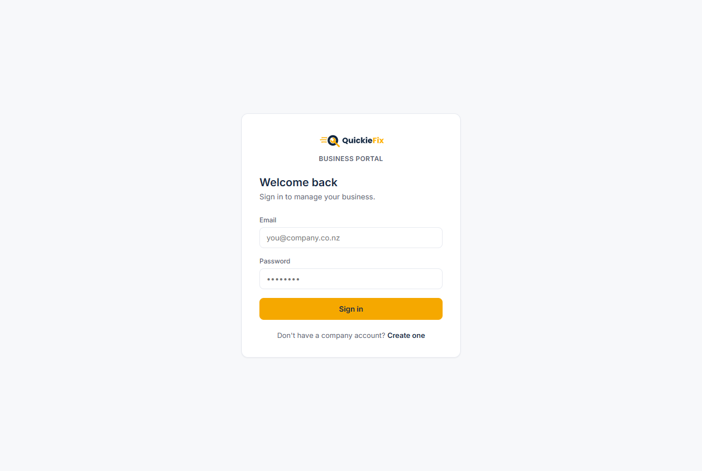
The Business Portal login — choose 🏢 Property agency when creating your account.QF-AG-XXXXYour agency is issued a unique agent code in the format QF-AG-XXXX the moment the account is created. This code is the key that links everything to your agency:
Every invite email you send from the portal carries this code automatically. You can view and copy it at any time on the Settings tab.
⚠️ Anyone who enters your code only requests a link — nothing happens until you approve or confirm them in the portal. The code is safe to share widely.
On first sign-in, the dashboard shows a "Get your portfolio live" checklist with a progress bar:
Each step has a button that jumps you straight to the right tab. Once all steps are ticked (or the first real job flows), the checklist retires and the working dashboard takes over: KPI tiles (Properties · Tenants linked · Panel members · Jobs active/done) and a live table of the most recent jobs at your properties.
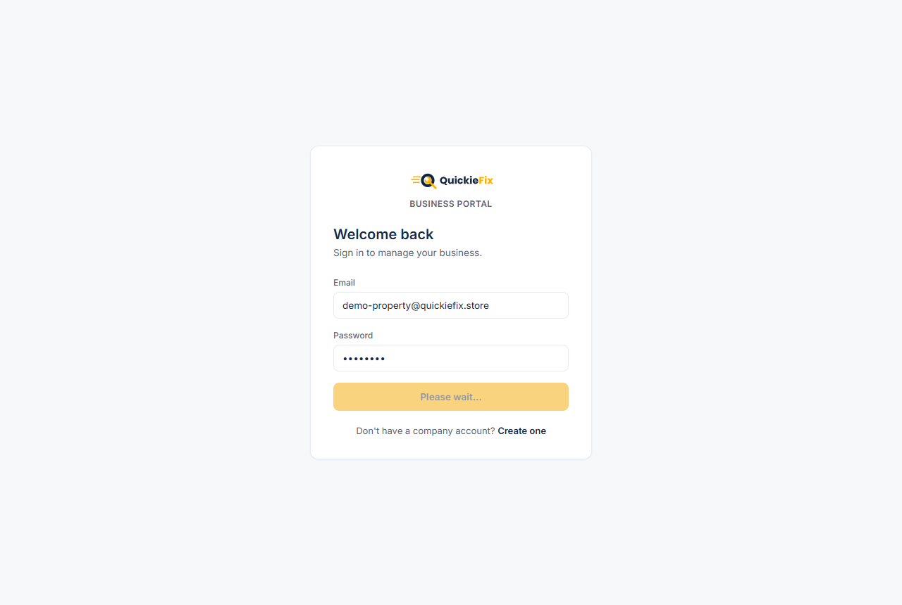
The dashboard — setup checklist, portfolio KPIs and a live feed of jobs at your properties.💡 You are also emailed on every job raised at a managed property — you never have to sit watching the portal.
Everything on QuickieFix hangs off a property: jobs are always raised against a property, and a property decides which tenants can report there and which panel receives the work.
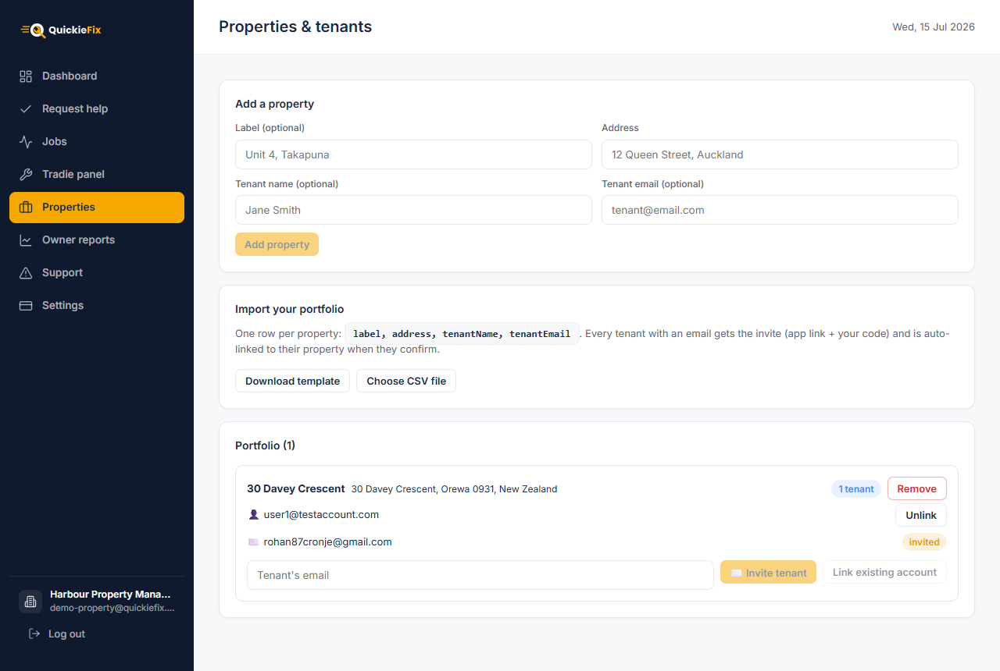
Properties & tenants — add properties one at a time, import in bulk, and manage tenant links per property.In Properties → Add a property:
When the tenant installs the app, creates a customer account with that email and enters your code, you confirm them in the portal and they are auto-linked to this exact property — repairs are then one tap away for them.
For an existing rent roll, use Import your portfolio:
label,address,tenantName,tenantEmail.label, tenantName and tenantEmail are optional; address is required.Every row with a tenant email triggers the same invite email (app link + your code + their address), and each tenant auto-links to their own property when they confirm.
💡 Rows with issues are skipped, not imported — fix them in the CSV and re-import just those rows.
Each property card on the portfolio list has its own tenant tools:
Tenant confirmations. When an invited tenant enters your code in their app, they appear at the top of the Properties tab under Tenants waiting for confirmation. Clicking Confirm approves them and auto-attaches them to the property they were invited to (matched by email).
⚠️ The amber warning card. If a tenant confirmed your code but their email didn't match any property invite, they show in an amber "Confirmed tenants without a property" card. These tenants cannot see their rental or raise repairs until you link them: find their property in the list and type their email into its tenant box (they'll appear in the suggestions), then click Link existing account.
Your panel is the closed list of tradies and trade companies allowed to receive jobs at your managed properties. Nothing dispatches off-panel at a managed property when the agency is paying.
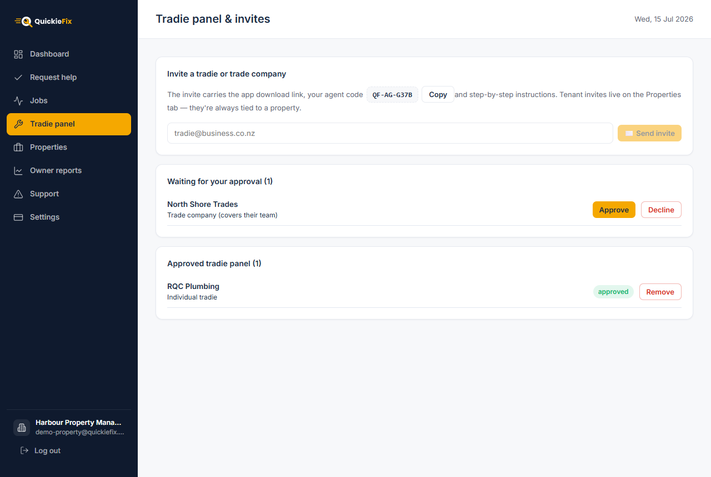
Tradie panel & invites — send invites, action pending requests, and manage the approved list.In Tradie panel → Invite a tradie or trade company, enter their email and click ✉️ Send invite. The invite carries the app/portal link, your agent code and role-specific step-by-step instructions:
💡 Tenant invites do not live here — they're on the Properties tab, because a tenant invite is always tied to a specific property.
Every membership request — tradie or company — waits in Waiting for your approval until you act on it. Click Approve or Decline; a confirmation dialog spells out exactly what approval means before you commit.
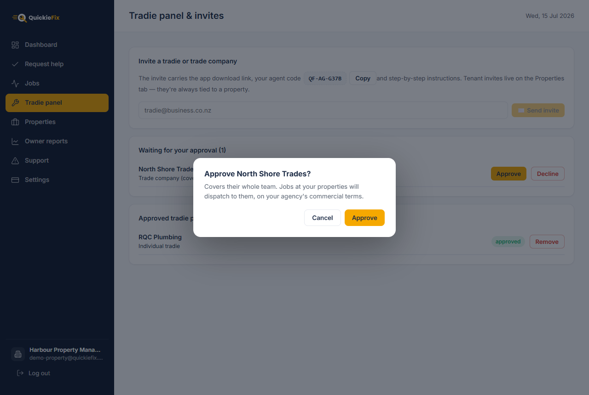
The approval dialog — for a company it states whether the membership covers their whole team or employees only, and that jobs dispatch on your agency's commercial terms.| Individual tradie | Trade company | |
|---|---|---|
| Who serves you | That one tradie, as their own business | The company's team — their choice of the whole roster or employees only (contractors excluded) |
| Who chose the scope | n/a | The company admin, when they entered your code |
| Billing chain | Agency → tradie | Agency → company → tradie |
A company membership means any covered, available team member with the right trade can be dispatched to your properties — the company handles its own people, and the commercial relationship runs agency → company → tradie.
Click Remove next to any approved member. They stop receiving jobs at your properties immediately. Jobs already in progress are unaffected.
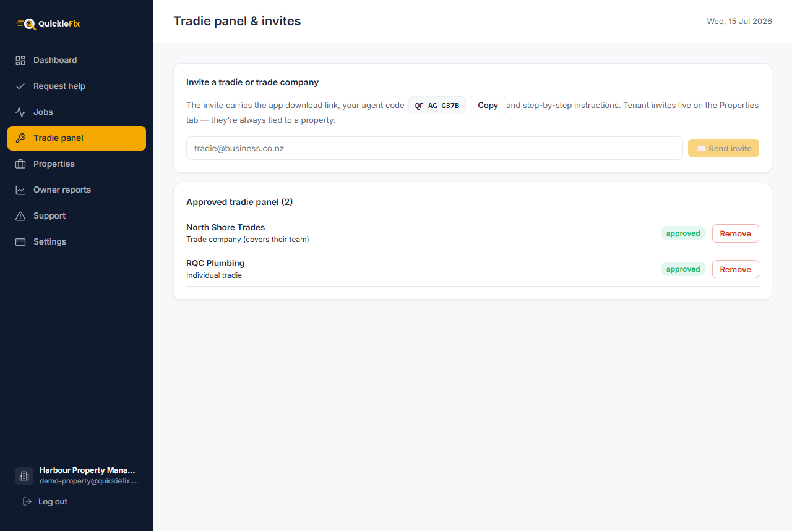
The approved panel — each member shows their type (individual tradie or trade company, with scope) and can be removed at any time.Once a tenant is confirmed and linked, their property appears in the QuickieFix app as a one-tap job location. When they report a fault there — trade, description, photos — the app recognises it as an agency-managed property and asks one extra question: who's paying for this job?
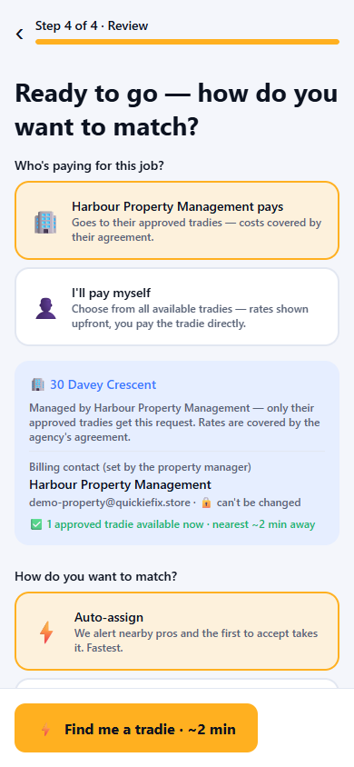
The tenant's phone — at a managed property, the tenant chooses who pays before dispatch.| Option | What happens |
|---|---|
| 🏢 "{Your agency} pays" (default) | The job goes only to your approved panel. Rates are covered by your agency's agreement and are not shown or negotiated in-app. The billing contact is locked to your agency (name and email shown read-only, marked 🔒 can't be changed) — the completion record and any invoicing land with you, not the tenant. The job appears on your Jobs tab, and you're emailed. |
| 👤 "I'll pay myself" | The tenant hires on the open market at their own cost: all available tradies, rates shown upfront, tenant pays the tradie directly. |
The tenant tracks the job live in their app throughout — matched tradie, travelling, on site, complete — without ever calling your office.
💡 The agency-pays option is pre-selected. Tenants have to actively opt out to pay themselves, so maintenance flows to your panel by default.
Some tenants will still ring the office. The Request help tab lets you raise the job for them while they're on the phone — same panel-only dispatch, same tenant tracking.
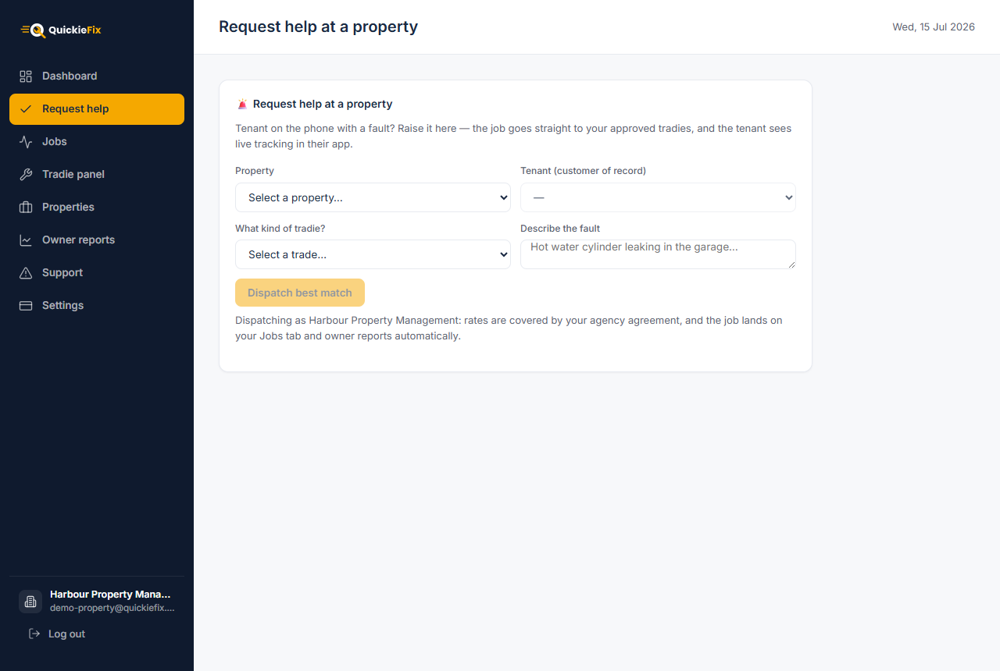
Request help — pick the property, and the linked tenant auto-fills as the customer of record.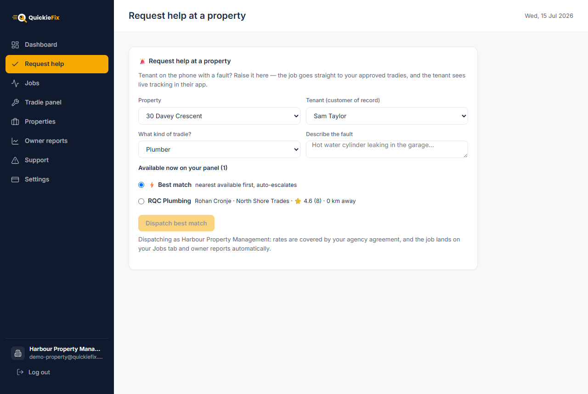
A filled-in request — live panel availability with ratings and distances, best match or a hand-picked tradie.The moment you dispatch:
💡 If none of your panel tradies of that trade are online, you can still dispatch — they are pinged the moment they come back online.
The Jobs tab is the single view of every job at your managed properties — tenant-reported and desk-dispatched alike.
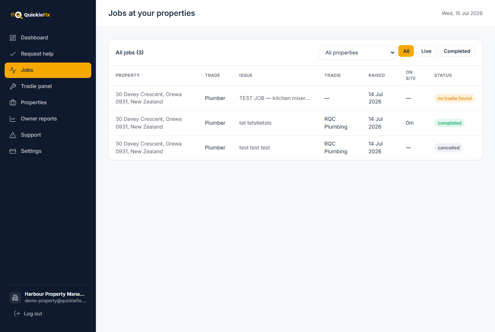
All jobs at your properties — filter by property and by live/completed status.Filters:
Columns: Property · Trade · Issue · Tradie · Raised · On site (time from arrival to completion) · Status.
Statuses update live, no refresh needed:
| Status | Meaning |
|---|---|
searching |
Pinging your panel for a match |
confirmed |
A tradie has accepted |
travelling |
Tradie en route to the property |
on site |
Tradie at the property, working |
completed |
Done — the record (and confirmation code) is generated |
cancelled |
Job was cancelled |
no tradie found |
No panel member picked it up — see FAQ |
The Owner reports tab is your deliverable to property owners: everything that happened at their asset, ready to attach to the monthly statement.
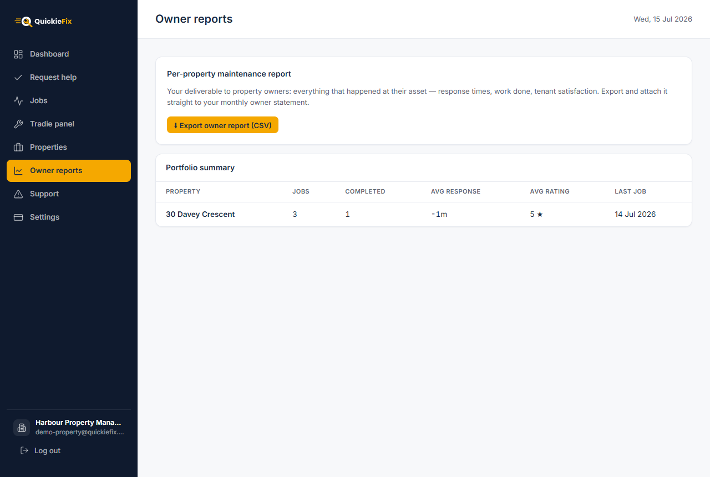
Owner reports — per-property job history export and the portfolio summary.Click ⬇ Export owner report (CSV) to download the full job history with one row per job:
| Column | Contents |
|---|---|
| Property | Street address |
| Trade | e.g. Plumber |
| Issue | The fault description |
| Tradie | Who did the work |
| Raised / Completed | Dates |
| On site (min) | Minutes from arrival to completion |
| Rating | The tenant's star rating |
| Parts | Parts & materials recorded at completion (description × qty) |
| Parts total ($) | The summed parts cost |
The file is named {your-agency}-owner-report-{date}.csv — filter it by property in your spreadsheet tool and attach it straight to the monthly owner statement.
Below the export, a live summary table shows one row per property: Jobs · Completed · Avg response (time from raised to a tradie confirming) · Avg rating · Last job. Use it to spot slow-response properties or ones generating unusual volume at a glance.
💡 Every completed job also generates a server-issued confirmation code (
QF-XXXXXX) on its completion email — a tamper-proof reference if an owner or tradie ever queries an invoice.
The Support tab sends a ticket straight to the QuickieFix team — it's emailed to our ops desk immediately, and we reply to your agency admin email.
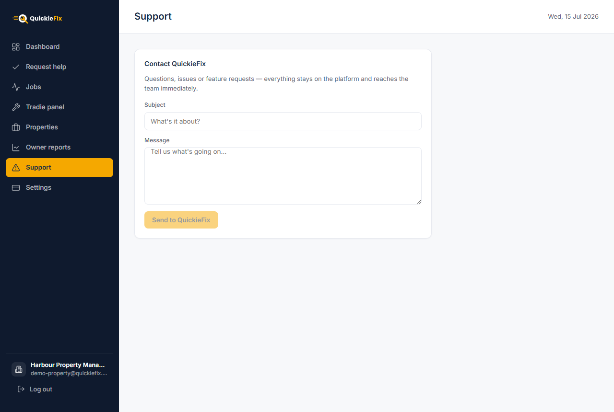
Support — tickets go directly to the QuickieFix team.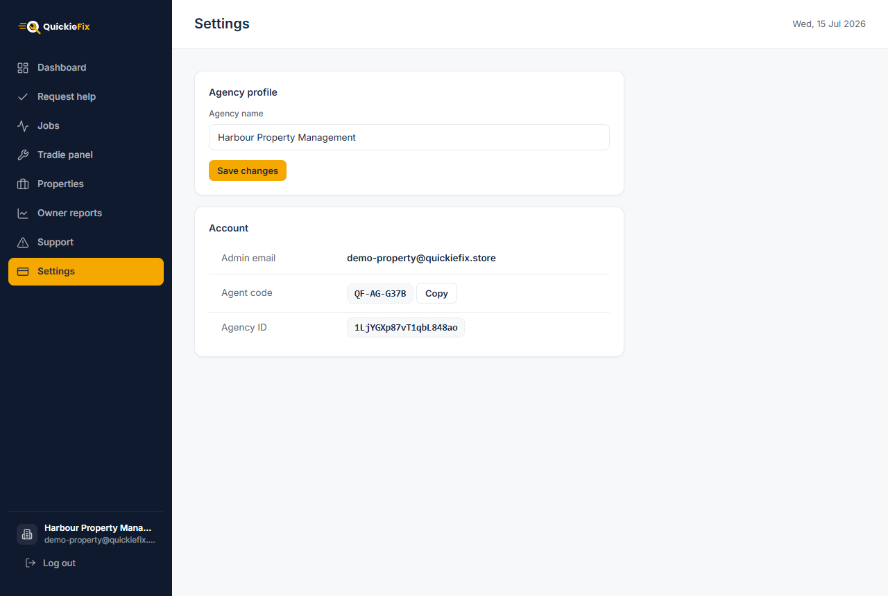
Settings — rename the agency, and view/copy your agent code.QF-AG-XXXX with a one-click Copy button, and your agency ID (useful when contacting support).A tenant confirmed my code but says they can't see their property in the app. Their invite email didn't match a property, so they confirmed without auto-linking. They'll be in the amber "Confirmed tenants without a property" card on the Properties tab. Find their property, type their email into its tenant box (they appear in the suggestions) and click Link existing account. The property appears in their app immediately and they can raise repairs.
What do tradies see on jobs at my properties? The work, the address, the fault description and photos — but no rates. Jobs at your managed properties run under your agency's commercial agreement, so there is no in-app price display or negotiation for those jobs.
What happens if no panel tradie is available?
The job still dispatches and sits at searching — every matching panel member is pinged the moment they come online. The job never leaves your panel: QuickieFix will not send an off-panel tradie to a managed property on an agency-paid job. If nobody picks it up, it shows as no tradie found on your Jobs board — re-raise it later, dispatch a specific tradie from Request help, or widen your panel with more invites.
Can a tenant bypass my panel? Only by choosing "I'll pay myself" at the who-pays step — that's an open-market job at their own cost, with the tenant as the billing contact. Any job billed to your agency is panel-only, always.
Does removing a property or panel member destroy history? No. Past jobs keep their own stamped copies of the property and agency details — your Jobs board and owner reports are unaffected. Removing a panel member only stops future dispatches; removing a property only unlinks its tenants going forward.
Who pays QuickieFix? During the founding pilot, the portal is free for agencies. Work itself is billed under your commercial agreement with your panel — agency → tradie for individuals, agency → company → tradie for company members.